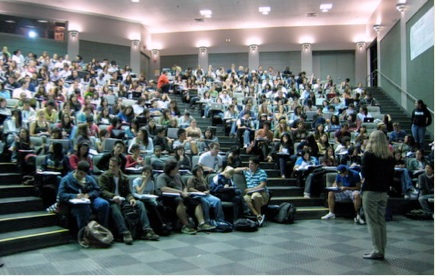

1.5 O impacto da expansão nos métodos de ensino



Os governos em diferentes províncias, estados e países variaram em suas respostas à necessidade de pessoas com maior nível educacional. Alguns (como no Canadá) aumentaram o financiamento estatal para as instituições de ensino superior em uma extensão que corresponde ou até supera o aumento no número de estudantes. Outros (especialmente nos EUA, na Austrália, na Inglaterra e no País de Gales) apostaram principalmente em cortes drásticos no financiamento estatal direto para os orçamentos operacionais, combinados com aumentos massivos nas mensalidades.
Qualquer que seja a estratégia do governo, em toda universidade e faculdade que visito me dizem que os docentes têm mais estudantes para ensinar, as turmas estão ficando maiores e, como resultado, cada vez mais aulas são apenas exposições com pouca interação. De fato, as estatísticas corroboram esse argumento. De acordo com Usher (2013), a relação geral docentes em tempo integral/estudantes em tempo integral nas universidades canadenses aumentou de 1:18 em 1995 para 1:22 em 2011, apesar de um aumento de 40% no financiamento por estudante (após inflação). Na prática, uma relação de 1:22 significa turmas muito maiores, pois nas universidades os professores em tempo integral dedicam apenas cerca de 40% do seu tempo ao ensino, e os estudantes podem cursar até 10 disciplinas diferentes por ano. O fato é que, especialmente nas aulas do primeiro e do segundo ano, o tamanho das turmas é extremamente alto. Por exemplo, uma aula de Psicologia Introdutória em uma universidade canadense de médio porte tem um único professor em tempo integral responsável por mais de 3.000 estudantes.
As mensalidades, no entanto, são muito visíveis, portanto muitas instituições ou jurisdições governamentais tentaram controlar os aumentos nas mensalidades, apesar dos cortes nas subvenções operacionais, resultando no aumento da relação docentes em tempo integral/estudantes. Além disso, como resultado das mensalidades mais altas e do maior endividamento dos estudantes para financiar a educação superior, os estudantes e os pais estão se tornando mais exigentes, mais como consumidores do que como estudantes em uma comunidade acadêmica. O ensino de má qualidade, em particular, é ao mesmo tempo mais visível e cada vez menos aceitável para os estudantes que pagam altas mensalidades.
A reclamação geral dos docentes é que o governo ou a administração institucional não aumentou o financiamento dos docentes proporcionalmente ao aumento no número de estudantes. Na verdade, a situação é muito mais complicada do que isso. A maioria das instituições que expandiu em termos de número de estudantes lidou com a expansão por meio de várias estratégias:
- contratação de mais professores temporários/horistas com salários mais baixos do que os docentes efetivos
- maior uso de assistentes de ensino que são eles próprios estudantes
- aumento do tamanho das turmas
- aumento da carga de trabalho dos docentes.
Todas essas estratégias tendem a ter um impacto negativo na qualidade, se os métodos de ensino não mudarem.
Os professores contratados são mais baratos de contratar do que os professores efetivos em tempo integral, mas geralmente não têm as mesmas responsabilidades, como a escolha do currículo e dos materiais de leitura dos docentes efetivos, e embora frequentemente bem qualificados academicamente, a natureza relativamente temporária de sua contratação faz com que sua experiência de ensino e o seu conhecimento dos estudantes se percam quando os contratos terminam. No entanto, de todas as estratégias, essa é provavelmente a que tem o menor impacto negativo na qualidade. Infelizmente, porém, é também a mais cara para as instituições.
Os assistentes de ensino podem estar apenas alguns anos à frente nos estudos em relação aos estudantes que ensinam; frequentemente são mal treinados ou supervisionados no que diz respeito ao ensino e, às vezes, se forem estudantes estrangeiros (como costuma acontecer), suas habilidades em inglês são precárias, tornando-os às vezes difíceis de entender. Tendem a ser utilizados para ministrar turmas paralelas da mesma disciplina, de modo que estudantes cursando a mesma matéria podem ter níveis de instrução muito diferentes. A contratação e o pagamento de assistentes de ensino podem estar diretamente ligados à forma como a pesquisa de pós-graduação é financiada por agências governamentais.
O aumento do tamanho das turmas tende a resultar em muito mais tempo dedicado a aulas expositivas e menos tempo para trabalho em grupos menores. As aulas expositivas são, de fato, uma forma muito econômica de aumentar o tamanho da turma (desde que os auditórios sejam grandes o suficiente para acomodar os estudantes extras). O custo marginal de adicionar um estudante a mais a uma aula expositiva é pequeno, pois todos os estudantes recebem a mesma instrução. No entanto, à medida que os números aumentam, os docentes recorrem a formas de avaliação mais quantitativas e menos flexíveis, como questões de múltipla escolha e avaliações automatizadas. Talvez mais importante ainda, a interação dos estudantes com os docentes diminui rapidamente à medida que os números aumentam, e a natureza da interação tende a fluir entre o docente e um estudante individual, em vez de entre os estudantes interagindo como grupo. Pesquisas (Bligh, 2000) mostraram que em aulas com 100 ou mais estudantes, menos de dez estudantes fazem perguntas ou comentários ao longo de um semestre. O resultado é que as aulas expositivas tendem a se concentrar cada vez mais na transmissão de informações à medida que o tamanho das turmas aumenta, em vez de na exploração, na clarificação ou na discussão (ver Capítulo 3, Seção 3 para uma análise mais detalhada da eficácia das aulas expositivas).
O aumento da carga didática dos docentes (mais disciplinas a serem ensinadas) é a menos comum das quatro estratégias, em parte devido à resistência dos docentes, que às vezes se manifesta nas negociações de acordos coletivos. Quando o aumento da carga didática dos docentes ocorre, a qualidade novamente tende a sofrer, pois os docentes dedicam menos tempo de preparação por aula e menos tempo a plantões de dúvidas, e recorrem a métodos de avaliação mais rápidos e fáceis. Isso inevitavelmente resulta em turmas maiores se os docentes efetivos ensinam menos, mas fazem mais pesquisa. No entanto, o aumento do financiamento à pesquisa resulta em mais estudantes de pós-graduação, que podem complementar sua renda como assistentes de ensino. Como resultado, houve uma grande expansão no uso de assistentes de ensino para ministrar aulas expositivas. No entanto, em muitas universidades canadenses, a carga didática dos docentes efetivos tem caído (Usher, 2013), levando a turmas ainda maiores para os que de fato ensinam.
Em outros setores de emprego, o aumento da demanda não resulta necessariamente em aumento de custos se esse setor puder ser mais produtivo. Assim, o governo busca cada vez mais maneiras de tornar as instituições de ensino superior mais produtivas: mais estudantes e com melhor desempenho pelo mesmo custo ou menos (ver por exemplo Kao, 2019). Até agora, essa pressão foi atendida pelas instituições ao longo de um período bastante longo, aumentando gradualmente o tamanho das turmas e usando mão de obra mais barata, como assistentes de ensino; mas chega-se rapidamente a um ponto em que a qualidade sofre, a menos que mudanças sejam feitas nos processos subjacentes — com o que quero dizer a forma como o ensino é planejado e entregue.
Outro efeito colateral desse aumento gradual no tamanho das turmas sem mudanças nos métodos de ensino é que os docentes acabam tendo que trabalhar mais. Em essência, estão processando mais estudantes, e sem mudar a forma como fazem as coisas, isso inevitavelmente resulta em mais trabalho. Os docentes geralmente reagem negativamente ao conceito de produtividade, encarando-o como uma industrialização do processo educacional, mas antes de rejeitar o conceito vale a pena considerar a ideia de obter melhores resultados sem trabalhar mais, mas de forma mais inteligente. Poderíamos mudar o ensino para torná-lo mais produtivo, de modo que tanto os estudantes quanto os docentes se beneficiem?
Referências
Bligh, D. (2000) What's the Use of Lectures? San Francisco: Jossey-Bass
Kao, J. (2019) Ontario's 2019 budget reveals plan to significantly tie university funding to performance outcomes The Varsity, University of Toronto
Usher, A. (2013) Financing Canadian Universities: A Self-Inflicted Wound (Part 5) Higher Education Strategy Associates, September 13
Atividade 1.5 Quanto espaço de manobra você tem?
- Em geral, você está satisfeito com suas condições de trabalho em relação ao ensino? Se não, quais são suas principais frustrações?
- Que soluções práticas (levando em conta a situação financeira de sua instituição, as necessidades dos estudantes e o tempo disponível para o ensino) poderiam talvez aliviar parte da frustração?
- Se você pudesse mudar a forma como ensina, quais seriam os principais benefícios tanto para você quanto para seus estudantes? O que precisaria mudar para que isso acontecesse?
Esta atividade não tem feedback.